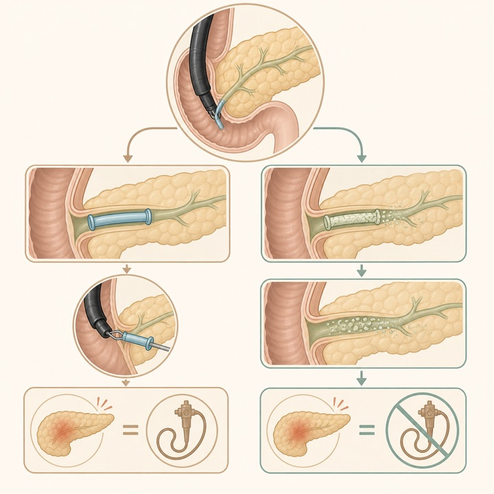
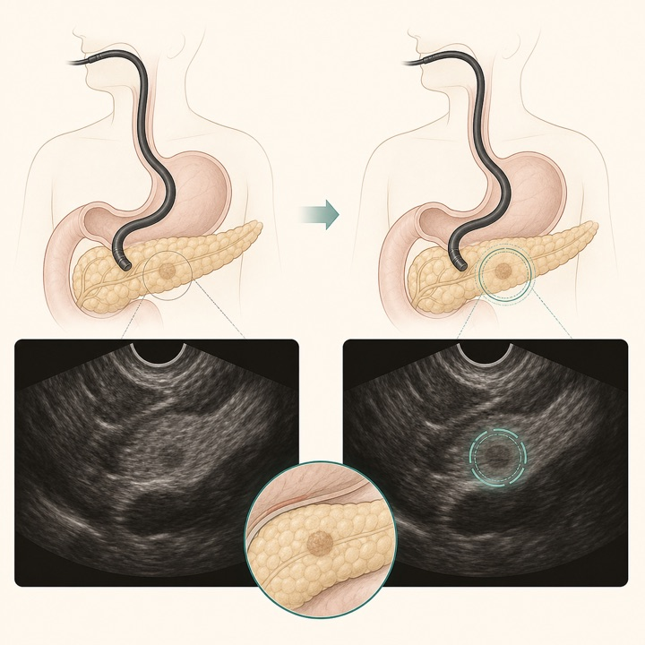
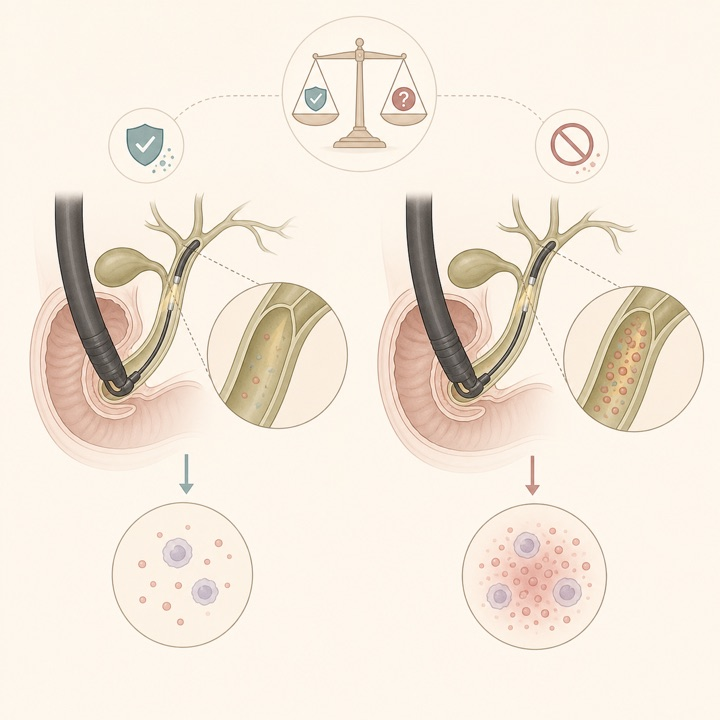
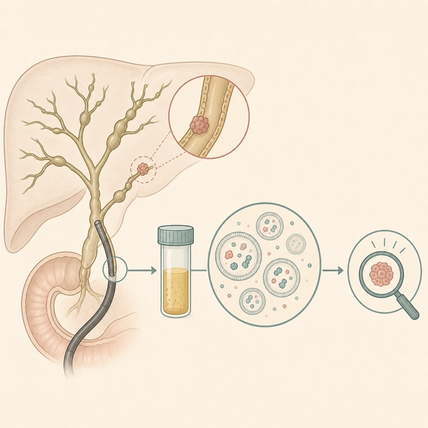
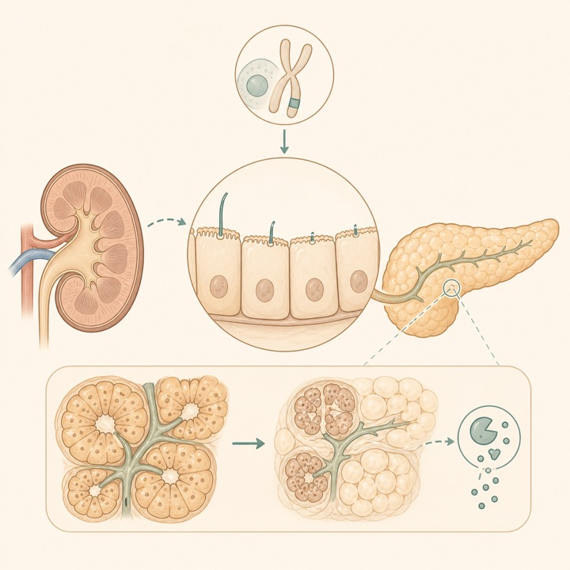
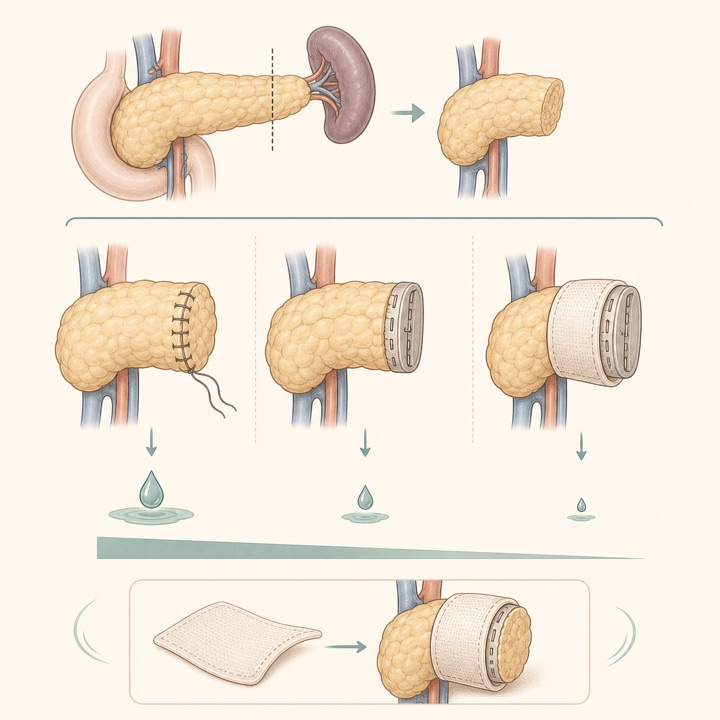
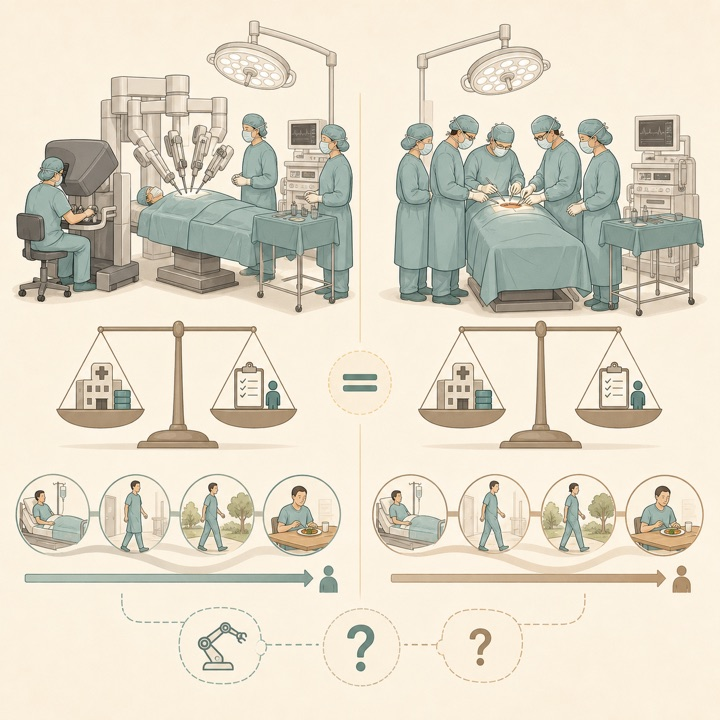

生分解性膵管ステントで抜去内視鏡を回避
Endoscopy / Q1Multicenter IPTW cohort
ERCP後膵炎はプラスチックステントと同等でしたが、3か月以内の再内視鏡は45.2%対0%でした。
Tokai University Pancreatobiliary Group
This Week's Pancreatobiliary Research Highlights
臨床的重要性、研究デザイン、対象規模、診療への応用可能性を基準に4報を選定しました。IFとJCR quartileは2025年値（2026年公表、判明した最良カテゴリ）を参照しています。
ERCP後膵炎はプラスチックステントと同等でしたが、3か月以内の再内視鏡は45.2%対0%でした。
57名の内視鏡医で診断精度は70.8%から77.1%へ改善し、特に小さく短時間だけ見える病変で効果が目立ちました。
胆汁EVタンパク＋CA19-9は内部データで高い識別能を示しましたが、少数例で外部検証前です。
総病院費用に有意差はなく、ロボット手術が費用対効果を持つ確率は各閾値で30%未満でした。
日本語: プラスチックステント177例と生分解性ステント178例を比較しました。ERCP後膵炎は6.2%対7.3%で、IPTW調整リスク差は＋3.59%（95%CI −3.27〜＋11.37）と有意差を認めませんでした。一方、3か月以内の再内視鏡は45.2%対0%でした。抜去処置を減らす実装上の利点は大きいものの、後ろ向き研究で導入時期の不均衡が残り、臨床・経済効果は前向き検証が必要です。
English: Biodegradable stents did not significantly change post-ERCP pancreatitis risk versus plastic stents, but eliminated repeat endoscopy for stent removal. Residual temporal and procedural confounding limits causal inference.

日本語: 57名の内視鏡医が38本の編集EUS動画をAIあり・なしで評価し、診断精度は70.8%から77.1%へ6.3ポイント改善しました。単独AI精度は92.3%で、効果は小さく短時間だけ見える高難度病変で目立ち、経験年数による差は明確ではありませんでした。実患者でのリアルタイム試験ではなく、編集動画と専門家基準に依存するため、臨床導入前に前向き患者単位検証が必要です。
English: AI assistance improved endosonographer accuracy from 70.8% to 77.1%, particularly for small and transient lesions, and increased confidence. The curated-video design does not establish real-time patient-level benefit.

日本語: 6研究2,531例・2,575処置を統合し、胆管炎は予防抗菌薬あり3.0%、なし7.8%でした（RR 0.46、95%CI 0.22〜0.95、I² 40.4%）。ただし統計的有意性は境界的で、1研究ずつ除く感度解析に耐えず、エビデンス確実性はvery lowです。全例一律投与を確立する結果ではなく、不完全ドレナージなど高リスク例の選別と耐性菌リスクを考慮した前向き試験が必要です。
English: Prophylaxis was associated with lower post-cholangioscopy cholangitis (3.0% vs 7.8%; RR 0.46), but the estimate was fragile and evidence certainty very low. Routine universal prophylaxis is not established.

日本語: PSC 52例、PSC合併胆管癌14例、後に胆管癌を発症した8例の胆汁EVプロテオームを解析しました。4タンパク＋CA19-9モデルは現コホートでAUC 0.993（CA19-9単独0.801）、別の3タンパクパネルは発症前検体で内部推定感度100%、特異度97%でした。臨床的には魅力的ですが、症例数が極めて少なく、同一データ内の選択・推定で過適合の懸念が高いため、独立外部コホートでの再現性確認が必須です。
English: Bile-EV protein panels markedly outperformed CA19-9 within this exploratory cohort and showed promise before clinical detection. Small samples and internal estimation make external validation essential.

日本語: 小児発症の膵形態異常341例を解析し、腎・膵機能障害を併せ持つ患者でHNF1B・NPHP3変異を同定しました。Nphp3マウスでは腺房萎縮、脂肪置換、炎症、導管線毛の数・長さ異常を認め、患者Dixon-MRIでも膵脂肪量増加を確認しました。新しい疾患概念を提示する機序研究であり、線毛病患者の膵外分泌機能評価を促しますが、診断基準やスクリーニング効果を確立した研究ではありません。
English: Human genetics, MRI, and Nphp3 mouse models support a previously unrecognized ciliopathy-associated exocrine pancreatic phenotype. The work is mechanistic and hypothesis-generating rather than a validated screening strategy.

新着・要旨反映待ち： Gastroenterology誌のIN-CYST前向きコホート Clinical Outcomes in Patients with Worrisome and High-Risk Pancreatic Cysts（PMID: 42624412）は2026年8月20日に登録されましたが、8月23日時点でPubMed抄録が未収載です。数値の推測を避け、定量的要約は原著要旨・本文確認後に行います。
日本語: 20 RCT・2,868例を統合し、補強型ステープラーは縫合閉鎖より臨床的膵液瘻が少なく（OR 0.41、95%CrI 0.17〜0.95）、順位も最上位でした。自家組織パッチは腹腔内液体貯留を減らす可能性がありました。一方、どの戦略でも膵液瘻は残り、ネットワーク内の手技差・患者差を考えると「万能な断端法」を示すものではありません。膵実質性状・主膵管径を含む個別化が依然重要です。
English: Reinforced staplers ranked best for clinically relevant fistula and outperformed suture closure, while autologous patches reduced fluid collections. Residual fistula risk and cross-trial heterogeneity remain.

日本語: 欧州6か国14施設のDIPLOMA-2試験268例（ロボット170、開腹98）の事前規定経済解析です。6か月総病院費用は€30,956対€28,271で有意差なし（P=0.538）。ロボットは術中費用が€5,491高く、術後費用は€2,806低いものの有意ではありませんでした。QALY差は−0.02（95%CI −0.07〜0.01）で、各支払意思額における費用対効果確率は30%未満でした。高症例数施設・6か月評価に限定され、長期価値は未確定です。
English: Six-month total hospital costs did not differ significantly. Higher intraoperative robotic costs were not offset by a demonstrable QALY gain, yielding under 30% probability of cost-effectiveness across thresholds.

ClinicalTrials.gov公式APIを2026年8月23日に検索し、8月17日〜23日に新規公開された直接関連研究12件と、診療・開発上重要な更新10件を掲載しました。一般固形癌のみ、嚢胞性線維症、糖尿病、無関係なEUS略語などは除外しています。JRCTは検索していません。
| 新規｜ERCP後膵炎 | NCT07776561 短期滞在下の積極的輸液によるERCP後膵炎予防 2026-08-20公開 / 介入研究 / 1,300例 / Recruiting。 |
|---|---|
| 新規｜慢性膵炎 | NCT07770412 縦断的ERCP情報を統合する前向き慢性膵炎バイオバンク 2026-08-18公開 / 観察研究 / 1,500例。 |
| 新規｜胆嚢癌 | NCT07767994 局所進行胆嚢癌に対するAK112＋GAP conversion therapy 2026-08-17公開 / 第II相 / 22例 / Not yet recruiting。 |
| 新規｜膵癌二次治療 | NCT07773363 retlirafusp alfa＋apatinib＋化学療法 2026-08-19公開 / 第II相 / 37例 / Not yet recruiting。 |
| 新規｜膵胆道癌 | NCT07769502 telisotuzumab adizutecan併用療法の安全性・疾患活動性評価 2026-08-18公開 / 第II相 / 168例。 |
| 新規｜進行膵癌 | NCT07777211 GKL-006注射剤 2026-08-20公開 / 第I/IIa相 / 52例 / Active, not recruiting。 |
| 新規｜膵嚢胞 | NCT07767227 手術対象となるworrisome pancreatic cystの血液・嚢胞液収集 2026-08-17公開 / 観察研究 / 30例 / Recruiting。 |
| 新規｜膵癌周術期 | NCT07772258 ウェアラブル支援プレハビリテーション・リハビリテーション 2026-08-19公開 / 介入研究 / 120例。 |
| 新規｜膵切除後 | NCT07768384 合併症を有する近位膵切除後患者への4週間集中多職種リハビリ 2026-08-17公開 / 単群前向き / 40例。 |
| 新規｜膵手術 | NCT07778914 心周期効率と膵手術後トロポニン上昇 2026-08-21公開 / 前向き観察 / 51例 / Completed。 |
| 新規｜肝移植 | NCT07775521 成人肝移植における第2世代喉頭マスク対気管挿管 2026-08-20公開 / 介入研究 / 100例 / Recruiting。 |
| 新規｜HIV陽性ドナー肝 | NCT07778459 / Expanding HOPE Liver HIVと肝移植に関する提供臓器拡大研究 2026-08-21公開 / 観察研究 / 80例 / Recruiting。 |
| 更新｜局所進行PDAC | NCT06958328 高線量放射線療法を検証する第III相試験 2026-08-17更新 / 356例 / Recruiting。 |
| 更新｜HER2胆道癌 | NCT06467357 T-DXd＋rilvegostomig対標準治療 2026-08-19更新 / 第III相 / 620例 / Recruiting。 |
| 更新｜EUS診断 | NCT04851106 EUS shear-wave elastographyによる膵癌診断 2026-08-20更新 / 130例 / Completed。 |
| 更新｜悪性胆道閉塞 | NCT06453590 非被覆・部分被覆・完全被覆金属ステント比較 2026-08-20更新 / 450例 / Active, not recruiting。 |
| 更新｜一次治療PDAC | NCT07491445 daraxonrasib単剤またはGnP併用 2026-08-18更新 / 第III相 / 900例 / Recruiting。 |
| 更新｜KRAS G12D PDAC | NCT07621718 / RASolute 305 zoldonrasib＋化学療法対プラセボ＋化学療法 2026-08-21更新 / 第III相 / 670例 / Recruiting。 |
| 更新｜ERCP後膵炎 | NCT05267379 ERCP後膵炎の薬物動態・遺伝因子を調べる欧州多施設コホート 2026-08-21更新 / 700例 / Recruiting。 |
| 更新｜切除後遺伝性PDAC | NCT04858334 / APOLLO BRCA1/2・PALB2変異切除後患者のolaparib対プラセボ 2026-08-21更新 / 第II相 / 152例 / Recruiting。 |
| 更新｜急性膵炎輸液 | NCT05781243 生理食塩水対乳酸リンゲル液による急性膵炎蘇生 2026-08-18更新 / 第IV相 / 812例 / Completed。 |
| 更新｜PSC | NCT05750498 / A-LiNK 自己免疫性肝疾患の転帰改善を目指す多施設コホート 2026-08-19更新 / 800例 / Recruiting。 |
PubMedの2026年8月17日〜23日EDATに加え、Nature Reviews Gastroenterology & Hepatology、The Lancet Gastroenterology & Hepatology、Gastroenterology、Gut、Clinical Gastroenterology and Hepatology、Annals of Surgery、Journal of Hepato-Biliary-Pancreatic Sciences、Gastrointestinal Endoscopy、Endoscopy、Surgical Endoscopy、Endoscopy International Open、VideoGIE、Clinical Endoscopy、Digestive Endoscopy、DEN Open、iGIEの公式サイト・誌面一覧またはDOI解決先を確認しました。対象期間内の全新着を網羅する保証はなく、速報段階・ahead of printでは情報が更新されることがあります。
2026年8月10日〜8月16日版
2026年8月3日〜8月9日版
2026年7月27日〜8月2日版
2026年7月20日〜7月26日版
2026年7月13日〜7月19日版
2026年7月6日〜7月12日版
医療従事者向け情報： 本ページは医師・医学生・研究者向けの文献整理であり、患者向け広告、診療ガイドライン、個別の診断・治療助言ではありません。掲載内容は公開時点の情報に基づき、原著論文・最新ガイドライン・各施設の方針をご確認ください。